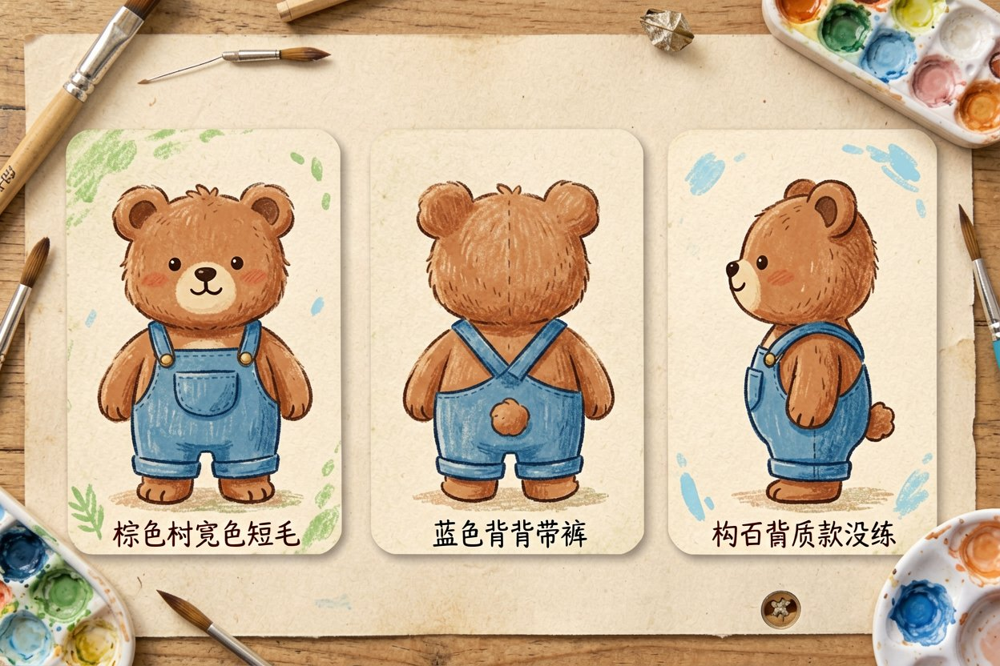
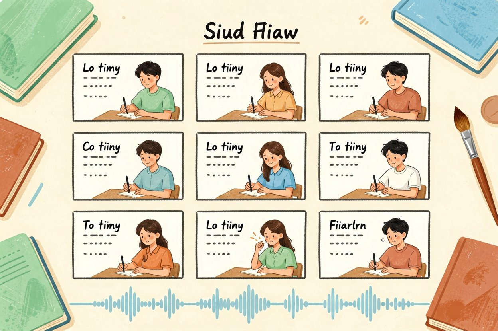
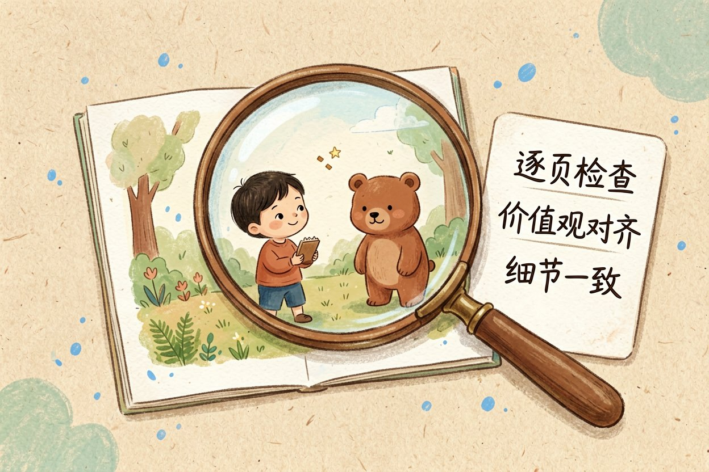
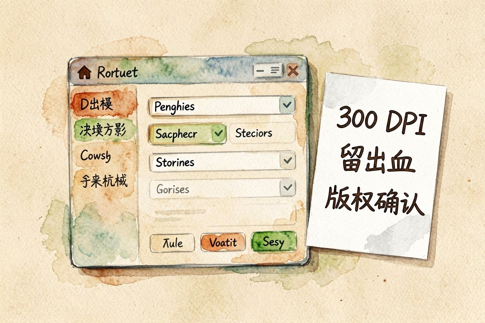

用 AI 做绘本：从故事到插图一次成型
想给孩子做一本专属绘本？用 AI 做绘本，给个故事大纲，它连文案带插图一起出。
AI 做绘本是什么：一句话解释
AI 做绘本，就是给你一个故事大纲，大模型帮你把故事拆成一页页分镜文案，再给每页配上插图。你拿到的是一本有文有图的半成品，而不是空白画布。
它建立在AI 图像生成原理之上，但多了「前后风格统一」的要求。和AI 海报设计相比，绘本难在角色要每页都长一样。
先定画风与角色卡

画风先钉死。水彩、蜡笔、扁平、绘本风，选一种写进每次提示词，否则这页萌系那页写实，书就散了。
做一张角色卡。把主角的发型、衣服颜色、标志特征写成固定描述，每页都带上，它才认得这是同一个人。
参考AI 内容创作指南的节奏，先出一页定调，满意了再批量铺其余页。
角色卡（每页提示词都附上）：
小熊豆豆，棕色短毛，穿蓝色背带裤，左耳有一撮白毛，
圆眼睛，绘本水彩风格，暖色调。
请据此画第 3 页：豆豆在树下发现一颗发光的种子。分镜与文案怎么拆

每页文字别超过两行，孩子翻得快，注意力才留得住。
先给主角定一张参考图，后面每页都拿它比对，角色才不会一会儿圆脸一会儿尖脸。
一页一件事。别把三个情节塞一页，孩子翻页没节奏，图也乱。一页一个动作最稳。
文案留白多。绘本字少图大，每页两三句就够，给画面留呼吸感，也方便念给孩子听。
页数先定再生成。八页还是十二页，开头规划好，免得中途加页破坏角色一致性。
图上要加字就用AI 图里加中文的办法，标题和页码尽量后期排版，别让模型现写容易乱码。
内容把关别省

看适龄。它写的情节偶尔偏成人化或带吓人元素，给孩子看前你务必逐页过。
看价值观。主角怎么待人、怎么面对失败，这些潜移默化，别让模型随手编出歪的导向。
看图文一致。它常画出和文案对不上的细节，比如文案说「红色气球」图里变蓝，这种要你改。
导出与打印注意

分辨率要够。打印至少 300 DPI，它默认出的图常偏小，放大打印会糊，导出时调高。
排版留出血。页面边缘别放重要图案，装订和裁切会吃掉，留白更保险。
版权自己留底。商用或送人前确认工具授权，原创故事归你，但生成图的权属要看平台条款。
还有一点是节奏控制。孩子听故事耐心有限，每页停留两三秒刚好，文案写太长念着累、听进去也少。可以故意在每页结尾留个小悬念，比如「豆豆刚伸手，草丛里却……」，翻页的欲望就来了。图画也别塞太满，留白多些，注意力才落在主角身上。成稿后自己念一遍计时，单页超二十秒就砍，短比长更抓人。
别把 AI 出的第一版直接念给孩子。AI 做绘本只是把你想讲的故事快速可视化，故事里的分寸和温度，还得你这个讲故事的人把关。
本文信息核对于 2026-08-14。AI 产品的价格、免费额度与功能变动频繁，实际以各工具官网当前说明为准。